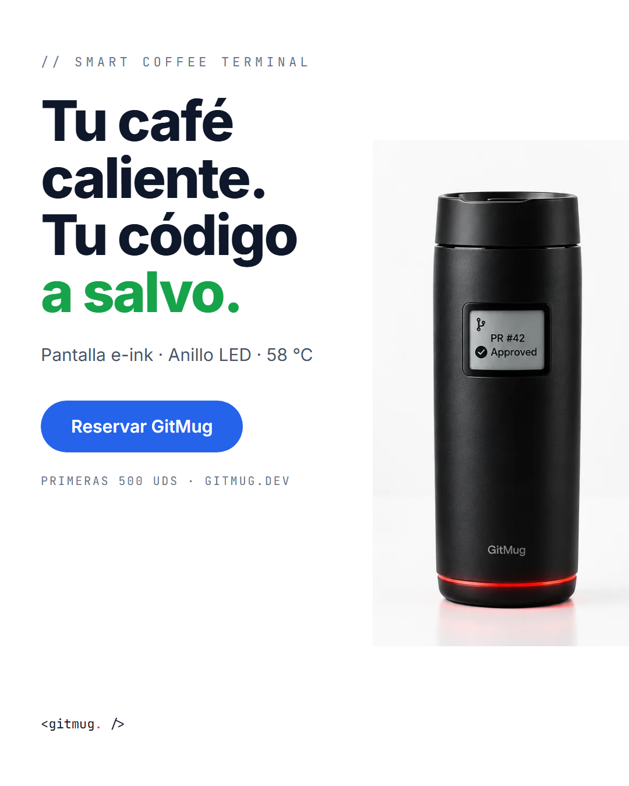

propuesta a · descartada
Catálogo directo
// hero → precio → características → contacto
Va al grano, pero pide dinero antes de explicar el valor. Y no tenemos precio: tenemos reserva conceptual.
// la marca
Cartel promocional, ficha de identidad, mini guía de estilo y la estructura de contenidos que elegimos. Las pruebas de las misiones 1 a 4, en una página.
// m1 — cartel promocional

// m2 — ficha de identidad
+ gris secundario (#7C8491) de apoyo para bordes y texto. El verde y el rojo nunca decoran: siempre significan algo.
Aa
Inter · titulares y texto
Hardware sobrio.
Párrafos limpios con interlineado generoso. Cálida, legible, invisible. Identidad visual en mayúsculas.
Aa
JetBrains Mono · código y etiquetas
// etiquetas, métricas y estado
✓ pipeline passing
regla: botones principales contundentes. El azul y blanco significan «avanzar».
// m4 — mini guía de estilo
01
Título claro
Borde fino, sin radios excesivos, estilo tech industrial.
Lineales, sin relleno, estilo dashboard.
4 · 8 · 16 · 24 · 32 px — nada fuera de escala.
sin radios curvos pronunciados · diseño arquitectónico.
// m3 — estructura de contenidos
propuesta a · descartada
// hero → precio → características → contacto
Va al grano, pero pide dinero antes de explicar el valor. Y no tenemos precio: tenemos reserva conceptual.
elegida
propuesta b · en la web
// hero + claim → 3D → vídeo → integraciones → características → reserva
El usuario entiende el valor antes de actuar. Una narrativa fluida y una sola acción principal: reservar.